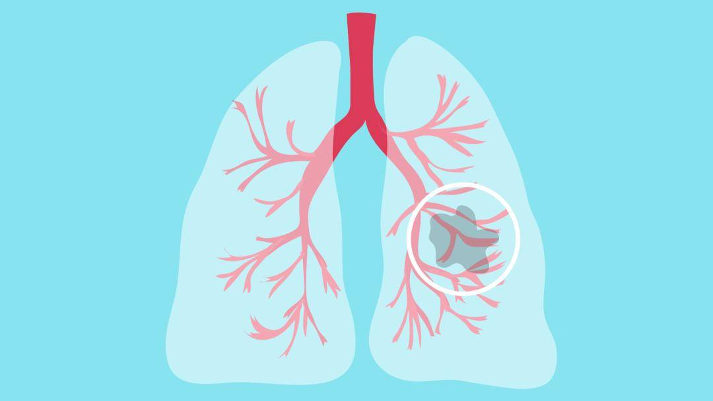

死亡杀手
新华社快讯李先生，42岁，软件工程师，因工作性质经常抽烟缓解工作压力，近半年来经常感冒、咳嗽。起初自己在家吃几片阿奇霉素、咳必清就可以缓解，后来咳嗽逐渐加重并伴有发热，在社区医院打吊针两个星期才有好转。
肺癌
近年来，肺癌治疗取得了较大进展，我国肺癌的5年生存率也从16.1%提高到19.7%，但仍有约75%的患者在诊断时已处于肺癌晚期，错过了最佳治疗时机。如果可以早期发现肺癌，并进行规范治疗，可以使患者及其家庭避免巨大的损失。
李先生，42岁，软件工程师，因工作性质经常抽烟缓解工作压力，近半年来经常感冒、咳嗽。起初自己在家吃几片阿奇霉素、咳必清就可以缓解，后来咳嗽逐渐加重并伴有发热，在社区医院打吊针两个星期才有好转。
近年来，肺癌治疗取得了较大进展，我国肺癌的5年生存率也从16.1%提高到19.7%，但仍有约75%的患者在诊断时已处于肺癌晚期，错过了最佳治疗时机。如果可以早期发现肺癌，并进行规范治疗，可以使患者及其家庭避免巨大的损失。